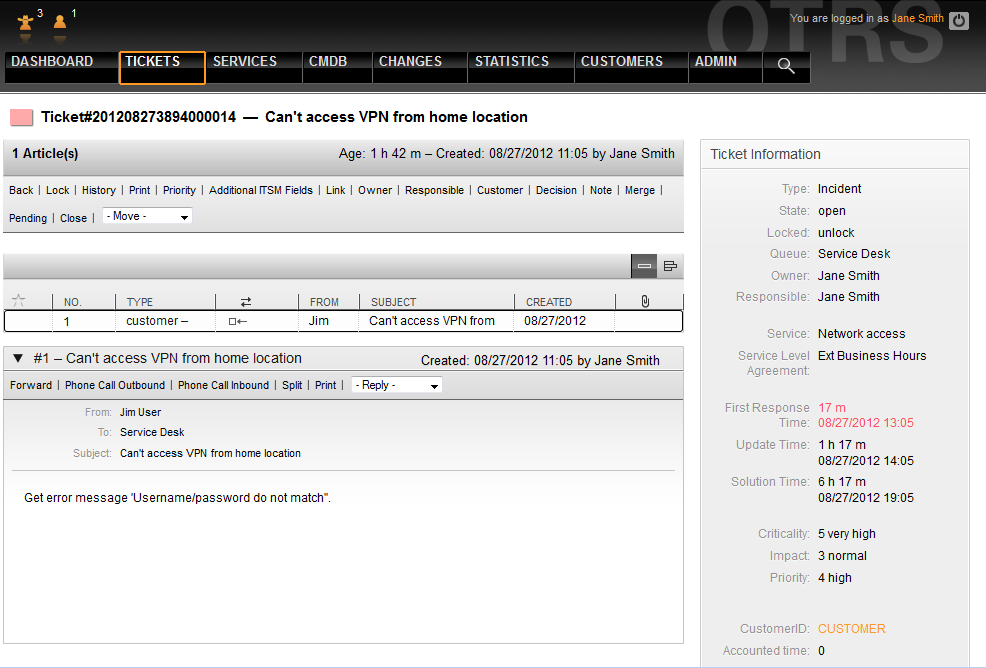

Change ticket data
Prev
Chapter 7. Service desk, incident, & problem management
Next
Change ticket data
All changes to the ticket can be effected just as in OTRS using the links below the navigation bar.
